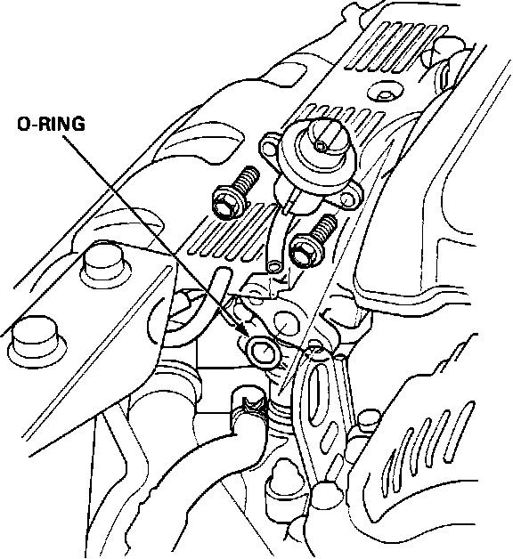

Fuel Pressure Regulator: Service and Repair
CAUTION: Do NOT smoke while working on the fuel system. Keep sparks and open flame away from the work area.Pressure Regulator Replacement:

1. Place a shop towel under the fuel pressure regulator, then relieve the fuel pressure by loosening the fuel system service bolt.
2. Disconnect the vacuum hose and fuel return hose from the fuel pressure regulator.
3. Remove the two 6 mm retainer bolts.
4. Re-install in reverse order using a NEW O-ring.
5. Torque 6 mm bolts to:
9 ft.lbs. (1.2 kg-m)
NOTE: When assembling the fuel pressure regulator, coat the O-ring with clean engine oil and insert it into the machined groove. Be careful not to damage the O-ring.